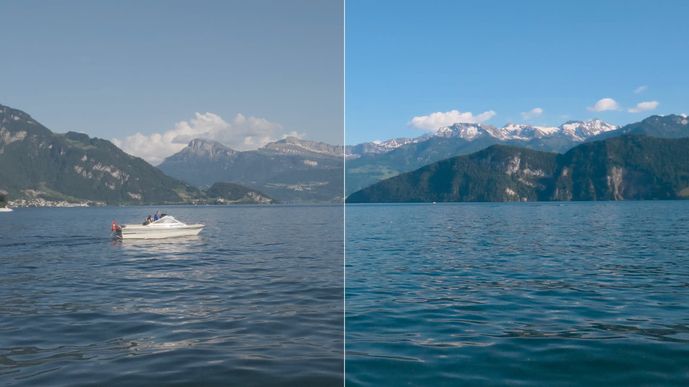
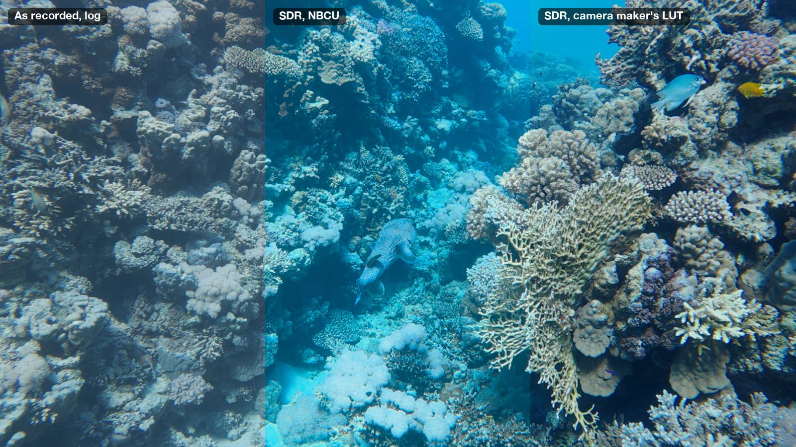
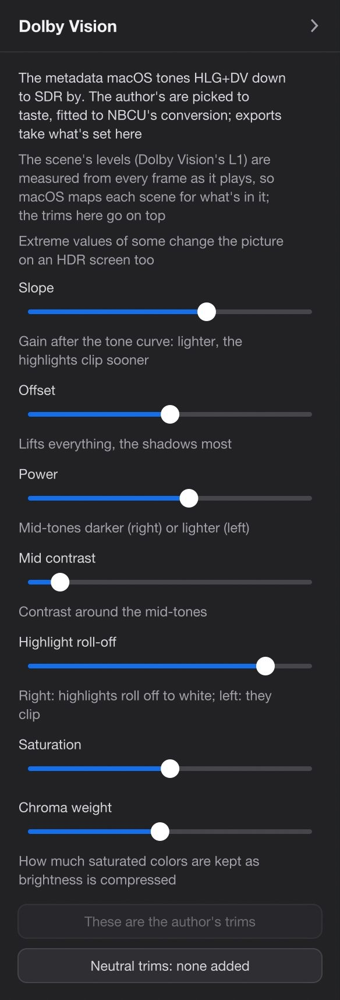
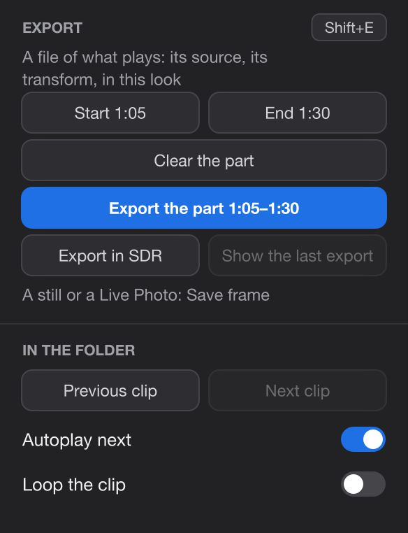
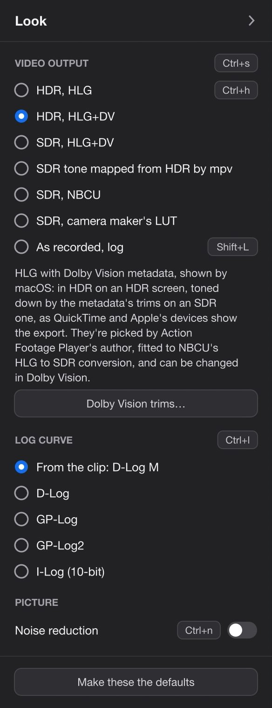
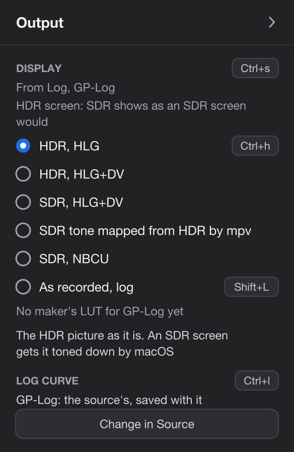

Log footage
Shot in log? It plays in color.
D-Log M, GP-Log and I-Log clips look grey in other apps. Double-click one here: it plays in color, in HDR on an HDR screen, with no grading. Mark a part, press Shift+E, and it exports the way it looks.

What you get
Color and HDR, without grading.
Log is a recording mode that keeps the most detail in the highlights and the shadows. The price is a flat, grey picture that normally needs grading: adjusting color and contrast in an editor, often with a LUT (a table that turns one set of colors into another). Here the player does the conversion for you.
In color at once
The player reads the camera's own metadata, sees that the clip is log, and converts it as it plays. Normal clips play as they are.
HDR where the screen has it
HDR (high dynamic range) screens show brighter highlights and deeper shadows: recent MacBook Pros, iPhones, HDR monitors and TVs. On one of them, log plays in HDR.
Your choice on other screens
An ordinary screen (SDR, standard dynamic range) needs HDR toned down. There are several ways to do it, and you pick the one you like.
Export what you see
One key turns the part you marked into one file, steady and in the same look, in HDR or SDR.
How it works
From the card to your screen, in four steps.
-
The clip says it's log
The player reads the camera's metadata, not the file name. DJI names normal clips
_Dtoo, so the name can't tell. For cameras whose metadata it can't read, Ctrl+l picks the log curve by hand. Copy clips straight from the card: an app that exports or trims them drops the metadata. -
Log becomes HDR
The clip is converted to HDR video in HLG (Rec.2100 HLG, 1000 nits), the HDR format phones and TVs use. It's a technical conversion, the same for every clip, with no creative look added and the exposure as you shot it. That's why it can happen by itself.
-
The screen decides the rest
An HDR screen shows the HDR as it is. On an ordinary screen it's toned down. In the Mac app that's done by default with Dolby Vision, the way QuickTime, iPhones and iPads show the export. The other ways are mpv's own tone mapping, NBCUniversal's neutral conversion and the camera maker's LUT: Ctrl+s goes through them.
-
Your choice sticks
What you pick with Ctrl+s is what the next clips start in on that kind of screen, until you quit. Make these the defaults in the side panel keeps it for good.
Which clips are recognized
| Camera | Log | How |
|---|---|---|
| DJI Osmo Action 6, Osmo 360 | D-Log M, D-Log | By itself. Verified D-Log M on the Osmo Action 6 |
| GoPro HERO12 Black (firmware 1.20 or later), HERO13 Black | GP-Log | By itself. Verified on a HERO12 Black |
| GoPro MISSION 1 | GP-Log2 | By itself |
| Other DJI cameras and drones | D-Log M, D-Log | By hand: Ctrl+l |
| Insta360 (X6, Luna) | 10-bit I-Log | By hand: Ctrl+l. 8-bit I-Log isn't supported |
| GoPro HERO12 Black before firmware 1.20, MAX2 | GP-Log | Play as they are: their GP-Log is exposed differently (2 stops darker, or 2 stops brighter on the MAX2). Ctrl+l still applies it |
Curves not marked Verified are built from the makers' published formulas and haven't been tried on real footage. A short clip from your camera in a GitHub issue gets it checked.
The looks
One clip, several ways to show it.
The player calls them video outputs. Ctrl+s goes to the next one the clip has, and the side panel's Look part lists them all. They're in the order Ctrl+s goes through them.
| Look | What you see | Where |
|---|---|---|
| HDR, HLG | The HDR picture as it is. On an ordinary screen, macOS tones it down.Windows' own Use HDR setting decides: when it's off, mpv tones the picture down for the screen. Ctrl+h goes straight to it. | All |
| HDR, HLG+DV | HLG with Dolby Vision metadata on each frame, shown by macOS: HDR on an HDR screen, toned down by the metadata's trims on an ordinary one. This is how QuickTime, iPhones and iPads show the export. | Mac app |
| SDR, HLG+DV | The same, always toned down, on an HDR screen too: what an ordinary screen shows. | Mac app |
| SDR tone mapped from HDR by mpv | Toned down by mpv itself, with its reference white at SDR white: the same on every system and screen. | All |
| SDR, NBCU | NBCUniversal's HLG to SDR conversion: neutral, the same for every camera. | All |
| SDR, camera maker's LUT | DJI's own D-Log M to Rec.709 LUT, made for the Osmo Action 6 and downloaded from DJI at setup. Only for D-Log M, once the LUT is downloaded. | All |
| As recorded, log | The file as it is, flat. L switches to it, for this clip only; Ctrl+s doesn't go through it. | All |
Rec.709 is the color standard of ordinary screens, the one every device plays the same way. DJI's LUT is optional: without it, the other looks all work.
What clips start in
- On an HDR screen: HDR, HLG.
- On an ordinary screen, in the Mac app: HDR, HLG+DV. With the plugins in your own mpv, SDR tone mapped from HDR by mpv.
- On a Mac with an ordinary screen: HDR, HLG+DV in the Mac app.
- On Windows and Linux: the kind of screen isn't detected, so every screen counts as HDR and clips start in HDR, HLG.
- A clip keeps its look when you move its window to a screen of the other kind.
Files already in HDR
The player's exports, phone videos and cameras' HDR modes play as they are, in HDR, and are never taken for log and converted a second time. Ctrl+s shows them in SDR through mpv or NBCU. The player's own Dolby Vision exports also play with their own Dolby Vision.

Dolby Vision
On a Mac, toned down the way Apple's devices do it.
Dolby Vision is metadata that travels with each frame of an HDR video: how bright the scene is, and trims, adjustments a screen applies when it tones the HDR down. With an HLG+DV look, macOS does the toning down with it, as an iPhone does when it plays your export. Mac app only
Each frame measured
The darkest, average and brightest levels of each frame are measured as it plays, so macOS maps every scene for what's in it: a dark dive and a sunlit beach each get their own room. Exports measure their frames the same way.
Trims to taste, yours to change
The trims that come with the player are its author's, picked to taste and fitted to NBCU's conversion. The side panel's Dolby Vision part has them as sliders, with a way back to the author's and to neutral ones: Dolby's own mapping with nothing added. Exports take what's set there.
Two looks, one file
HDR, HLG+DV and SDR, HLG+DV are the same video. The second is always toned down, so on an HDR screen you see what an ordinary one shows. Both export the same HDR file with Dolby Vision.
Not on Windows or Linux
The Dolby Vision looks and exports need the Mac app's own mpv. On Windows and Linux, and with the plugins in your own mpv on a Mac, there are no HLG+DV looks and no Dolby Vision exports.

Exporting
Export what you see.
One HEVC 10-bit file, made as the clip plays: in the look on screen and stabilized the way it plays, with the clip's sound.
-
Mark the part
Press l at the start and l at the end. Mark nothing to export the whole clip.
-
Press Shift+E and name it
Type a name, or press Enter for the one suggested. The first time in a trip, the side panel's Project tab opens: choose the trip's folder and press Initialize the project here. About projects
-
Pause, and it's done sooner
Progress shows at the top right. Paused, the export runs at full speed, about 35 frames a second for 4K at 60 fps on an M1 Pro Mac. While the video plays, it nearly stops, so playback stays smooth. A notification says where the file went.A message over the video says where the file went.

The look on screen decides the file
| Look on screen | What the export is | File name |
|---|---|---|
| HDR, HLG | HDR (HLG), with no Dolby Vision. On an ordinary screen each device tones it down itself; Apple's devices make it darker than NBCU's SDR. | Turtle.mov |
| HDR, HLG+DV Mac app | HDR (HLG) with Dolby Vision. iPhones, iPads and Macs show it as the player does, on any screen. | Turtle (Dolby Vision).mov |
| SDR, HLG+DV Mac app | The same HDR file with Dolby Vision. Not an SDR file. | Turtle (Dolby Vision).mov |
| SDR tone mapped from HDR by mpv | HDR (HLG). Not an SDR file. | Turtle.mov |
| SDR, NBCU | SDR (Rec.709), through NBCU's conversion | Turtle (SDR).mov |
| SDR, camera maker's LUT | SDR (Rec.709), through DJI's LUT | Turtle (SDR).mov |
| As recorded, log, or a clip that isn't log | The clip's own colors, stabilized | Turtle.mov |
| Export in SDR, whatever plays | SDR (Rec.709), through the SDR look playing, or else the one you chose last: NBCU or DJI's LUT. For log clips. | Turtle (SDR).mov |
| Batch exports, whatever plays | HDR (HLG): no Dolby Vision, no SDR. Batch and ProRes | the clip's name, _stab added |
Only the HLG+DV looks give a file with Dolby Vision, and they exist only in the Mac app. On a Mac with an HDR screen, clips start in HDR, HLG, whose export has none: for iPhones and iPads, switch to HDR, HLG+DV before Shift+E. For any other screen, any player or a social network, SDR, NBCU, the maker's LUT or Export in SDR gives a file that looks the same everywhere.
Where it goes
To the project's _Exports folder, under the name you gave: Turtle.mov, Turtle (SDR).mov or Turtle (Dolby Vision).mov. A name already taken gets a number: Turtle 2.mov. Batch exports of a clip that isn't in a project go to a stabilized folder next to it.
What it takes from playback
The look, and the stabilization as you set it: on or off, wide, the level, the edges, the horizon lock, the correction for water. Noise reduction (Ctrl+n) and the other playback clean-ups stay out of exports. Stabilization
Several at once, or cancel
Start an export on another clip while one runs. Shift+E twice within 3 seconds, or Cancel export, stops the one of the clip playing.
Batch and ProRes
Many clips at once, or ProRes for an editor.
A whole folder, from the FinderFile Explorer
Select clips in the Finder, right-click, and choose Quick Actions → Stabilize + LUT. They're exported one after another in the background, with a notification for each. A log of it is in ~/Library/Logs/gyroflow-export.log.
Select clips in File Explorer, right-click, and choose Stabilize + LUT (on Windows 11, under Show more options). A console window shows the progress, and clips you send while it runs join the queue.
Whatever the player shows, batch exports make log clips HDR (HLG), with no Dolby Vision and no SDR. A clip that isn't log and has nothing to stabilize is skipped.
The command line, and ProRes
gyroflow-export is the program behind every export, and it comes with the player. In the app it's ActionFootagePlayer.app/Contents/Resources/plugins/gyroflow/gyroflow-export. It's the only way to get ProRes 422 HQ, for editors that prefer it to HEVC.
gyroflow-export --prores --nbcu --from 1:20 --to 1:45 DJI_0007_D.MP4| Option | What it does |
|---|---|
--curve dlogm|dlog|gplog|gplog2|ilog|none | The log curve, for clips not recognized; none keeps the colors as recorded |
--sdr | SDR (Rec.709) through DJI's LUT. D-Log M only: other curves stay HLG |
--nbcu | SDR (Rec.709) through NBCU's conversion, for any curve |
--prores | ProRes 422 HQ instead of HEVC. Not with Dolby Vision |
--no-stabilize | Color only |
--from, --to | A part, in seconds or m:ss |
--out <folder> | Where the files go |
--force | Replace an existing export; without it, a clip already exported is skipped |
gyroflow-export --help lists the stabilization options too. Ctrl+C stops it and removes the unfinished file. The exports keep the clip's sound and its dates.
Settings
The Look part of the side panel.
Tab shows the side panel beside the video. It opens on Stabilization: click Look on its rail.
- Video output Ctrl+s
- The looks the clip has, then As recorded, log (L), with a few words about the one chosen under them. On an HDR screen, a line says the SDR looks show as an ordinary screen would. With an HLG+DV look, Dolby Vision trims… opens the Dolby Vision part. Default: depends on the screen, see What clips start in.
- Log curve Ctrl+l
- From the clip: D-Log M (or None, not log), then D-Log M, D-Log, GP-Log, GP-Log2 and I-Log (10-bit), to choose by hand. The look stays as it is. Default: from the clip.
- Picture: Noise reduction Ctrl+n
- Less noise while it plays, on any clip, and for the next clips too. Not in exports. Default: off.
- Make these the defaults
- Keeps the look for HDR screens, the look for ordinary screens and noise reduction as what clips start in, from now on.


The Dolby Vision part Mac app only
On the rail only where the HLG+DV looks exist. When another look plays, a button shows SDR, HLG+DV to see the trims at work. Extreme values of some change the picture on an HDR screen too.
| Slider | What it does |
|---|---|
| Slope | Gain after the tone curve: lighter, the highlights clip sooner |
| Offset | Lifts everything, the shadows most |
| Power | Mid-tones darker (right) or lighter (left) |
| Mid contrast | Contrast around the mid-tones |
| Highlight roll-off | Right: highlights roll off to white; left: they clip |
| Saturation | How colorful the toned-down picture is |
| Chroma weight | How much saturated colors are kept as brightness is compressed |
| Scene average, Scene highlights, Scene blacks | Shown only when each frame isn't measured (dv_live_l1=no): the scene's levels by hand |
Back to the author's trims and Neutral trims: none added under the sliders reset them. Default: the author's trims. Exports take what's set here.
The Clip part: Export
- Export the clip, or Export the part 1:20–1:45
- The same as Shift+E. While it runs: Cancel export.
- Export in SDR
- Rec.709, whatever plays. For log clips.
- Show the last export
- Shows it in the FinderFile Explorer.
In the settings file
Make these the defaults writes dlogm.conf in ~/Library/Application Support/ActionFootagePlayer/mpv/script-opts/%LOCALAPPDATA%\ActionFootagePlayer\mpv\script-opts\. You can also edit it by hand:
| Line | What it sets |
|---|---|
hdr_screen=hdr | The look log clips start in on HDR screens: hdr, dv, dvsdr, tonemap, nbcu or maker |
sdr_screen=dv | The same for ordinary screens (tonemap where there's no Dolby Vision) |
dv_live_l1=yes | Each frame's levels measured as it plays, for the HLG+DV looks |
denoise=no | Noise reduction when a clip starts |
Keys
The keys for log and exports.
Limits
Good to know.
- Recognized by itself: only the DJI Osmo Action 6 and Osmo 360, GoPro HERO12 Black (firmware 1.20 or later), HERO13 Black and MISSION 1. Everything else needs Ctrl+l.
- Tried on real footage: D-Log M on the Osmo Action 6 and GP-Log on a HERO12 Black. D-Log, GP-Log2 and 10-bit I-Log are built from the makers' formulas only. 8-bit I-Log isn't supported. The MAX2's GP-Log, applied by hand, is about 2 stops too bright.
- A maker's own SDR look only for D-Log M: DJI's LUT for the Osmo Action 6, used for every D-Log M clip, downloaded from DJI at setup. GoPro and Insta360 clips get NBCU's or mpv's SDR.
- Dolby Vision only in the Mac app. And only exports made in an HLG+DV look carry it; batch exports don't.
- Two "SDR" looks export HDR: SDR, HLG+DV and SDR tone mapped from HDR by mpv. For an SDR file, use NBCU, the maker's LUT or Export in SDR.
- The trims are a matter of taste: the author's, fitted to NBCU. Neutral ones are a button away.
- A monitor that had an HDR screen before it: macOS can show HDR on it about a stop too dark until the Mac restarts. The player says so once a session and can't fix it; the SDR looks aren't affected.
- While a clip plays, its export nearly stops. Pause to let it run. On Windows it runs at a few frames a second while you watch.
- The pictures on this page aren't HDR. A screenshot can't show what an HDR screen shows, so they're in SDR looks.
Questions
About log, HDR and exports.
Do I need an HDR screen?
No. On an ordinary screen the clip is toned down, in the look you choose. An HDR screen shows more: brighter highlights, with the shadows kept.
Should I export in HDR or SDR?
For iPhones, iPads and Macs, export from HDR, HLG+DV on a Mac: the file looks right on their screens, HDR or not. For anything else (other phones, TVs, social networks, a friend's laptop), SDR is safer: SDR, NBCU, the maker's LUT, or Export in SDR. Those files look the same everywhere.
Why did "SDR, HLG+DV" give me an HDR file?
It's the same video as HDR, HLG+DV, always shown toned down so you can see what an ordinary screen gets. The export is the HDR file with Dolby Vision, which Apple's devices tone down the same way. For a plain SDR file, use Export in SDR.
I grade in an editor. Is this for me?
Yes, as the step before it: look through clips in color, pick the good ones, and keep your originals for the edit. When you do want a file, the command line makes ProRes 422 HQ, in HLG or in Rec.709. The HLG conversion adds no look, so you can still grade it.
My log clip plays grey. What now?
Check that it came straight from the card: apps that copy, trim or export clips drop the metadata the player reads. If your camera isn't one it recognizes, press Ctrl+l until the right curve shows. A short sample in a GitHub issue helps get your camera recognized.
Try it
Double-click a log clip.
Free, no account, and your footage stays as it is.
Stabilization
How clips shot with the camera's stabilization off play steady, and what you can set.
StabilizationSend a clip from your camera
A few seconds straight from the card help the player read your camera's log right.
Open an issue on GitHub